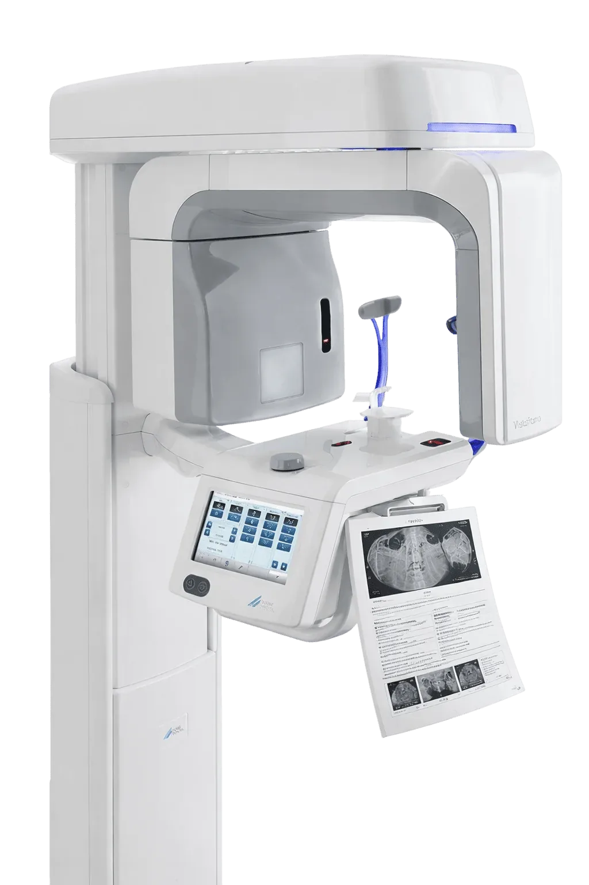

Digital radiology reporting and teleradiology
ThinkRay is ThinkWide's radiology solution. It brings digital report processing, DICOM-based teleradiology, swift online report delivery and secure access to patient data together for X-ray clinics, diagnostic centres, hospitals and large medical organisations.
Labs and diagnostic centres that run on ThinkWide
What slows radiology teams down
Slow, paper-based reporting
Printed films and handwritten or retyped reports slow down every step between the scan and the patient.
Radiologists in other locations
When the reporting radiologist is not on site, studies and reports are passed around through channels that are hard to manage.
Patients waiting for reports
Patients come back, or call, just to collect a report that could have reached them digitally.
Reports that are hard to verify
Without a way to check a report's source, referring doctors and patients have to trust the paper.
One digital path from study to signed report
ThinkRay modernises radiology with digital report processing. Studies are shared for reporting in DICOM format, reports are processed digitally and delivered online, and patient data stays securely accessible for follow-up.
Share studies in DICOM. DICOM-based teleradiology for remote reporting.
Process reports digitally. From shared study to processed report, without paper.
Deliver QR-coded reports online. Prompt online delivery, with a QR code to verify the source.

Report studies wherever your radiologist is
ThinkRay uses DICOM-based teleradiology, so imaging studies can be shared and reported without the radiologist being in the same building as the modality.
- Imaging studies shared in the standard DICOM format
- Remote reporting for X-ray clinics, diagnostic centres and hospitals
- Supports a range of clinical studies
Move from scan to report without paper
Reports are created and processed digitally, which removes the delays of printing, retyping and physically moving reports between people.
- Digital report processing
- Swift and efficient report delivery
- Patient details and reports kept together
Reports that reach patients and can be verified
Radiology reports are sent online for prompt delivery, and each report carries a QR code so its source can be checked.
- Send reports online
- QR-coded reports for verification
- Prompt delivery to patients

Patient imaging data, stored securely and accessible
ThinkRay keeps patient data securely stored and accessible to authorised users for clinical studies and follow-up visits. Your centre remains the owner of its patient records.
- Secure data storage
- Access for authorised users
- Patient records remain your centre's data
How ThinkRay works,
step by step
-
Acquire study
The study is acquired at your X-ray, CT, MRI or other imaging setup.
-
Share in DICOM
Images are shared for reporting through DICOM-based teleradiology.
-
Report
The radiologist reports the study digitally.
-
Process
The report is processed and prepared for delivery.
-
Deliver online
A QR-coded report is sent to the patient online.
ThinkRay integration capabilities
DICOM
DICOM-based teleradiology
Your imaging setup
ThinkWide does not supply PACS; we'll discuss how ThinkRay fits your existing systems
ThinkLab
For centres that run pathology and radiology
Custom integrations
API and custom work, scoped and quoted separately
Built for
What ThinkRay customers say
What is ThinkRay?
ThinkRay is ThinkWide's radiology solution for digital report processing, DICOM-based teleradiology, online report delivery and secure patient data access.
Does ThinkWide provide a PACS?
No. ThinkWide does not provide PACS. Talk to our team about how ThinkRay fits the imaging systems your centre already uses.
Who is ThinkRay for?
X-ray clinics, diagnostic centres, hospitals and large medical organisations that want faster, digital radiology reporting.
Can reports be verified?
Yes. ThinkRay reports are QR-coded so their source can be checked.
How do I see ThinkRay with my own workflow?
Book a demo and share a few details about your centre. The ThinkWide team will walk you through the relevant workflows.
See ThinkRay in action
Share a few details and the ThinkWide team will walk you through the workflows that matter to your centre.
- A walkthrough of the workflows your team uses every day
- Answers on analyzer compatibility for your machines
- A plan for onboarding, configuration and data migration
Prefer to talk? Call +91 93306 87508